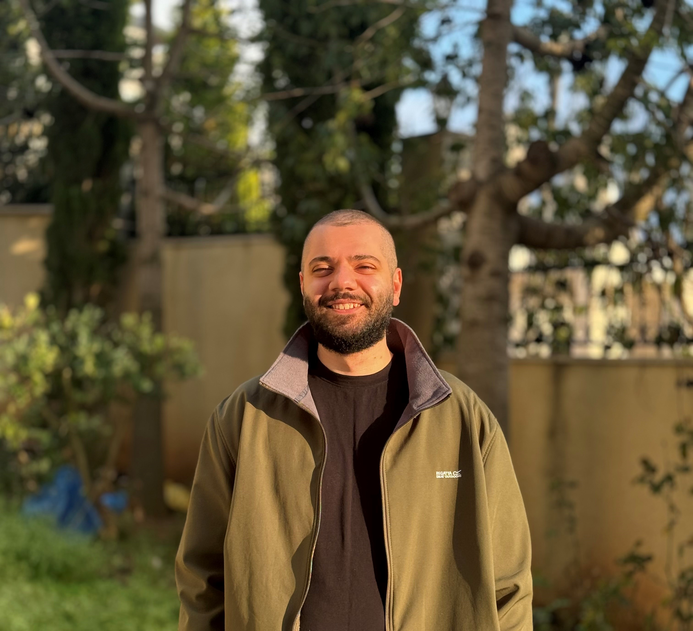

Mohammad Othman
Founder & Lead AI Engineer
📍 Aberdeen, Scotland · United Kingdom
Email: Mo@MohammadOthman.com

About Me
I'm the Founder & Lead AI Engineer at Transformer Labs, an AI consultancy delivering end-to-end LLM, RAG, voice AI, and automation solutions for clients across Europe, the Gulf, and the US. I design and deploy production RAG systems, build real-time voice AI agents, deliver LLM fine-tuning engagements, and architect cost-effective cloud deployment strategies. I work as a founding engineer — hands-on with clients on both long-term and short-term engagements.
I hold a Master's degree in Artificial Intelligence from the University of Aberdeen and a Bachelor's in Computer Engineering from the Eastern Mediterranean University.
Previously, I served as a Deep Learning Engineer at AUI™ (Augmented Intelligence), building automated pipelines for fine-tuning LLMs and scalable infrastructure for model deployment. Before that, I worked as a Machine Learning Engineer at Jawwal, a Software Engineer at Foothill Technology Solutions, an NLP Scientist at the University of Aberdeen, and a Machine Learning Intern at Sky.
Skills & Technologies
LLM & RAG Systems
LangChain, LlamaIndex, Pinecone, FAISS, Hybrid Retrieval, Multilingual Embeddings, Multi-Tenant RAG Architectures
LLM Fine-Tuning & Serving
vLLM, LlamaFactory, LoRA, QLoRA, Quantization, Bits and Bytes, Megatron-LM, DeepSpeed
Voice AI & Agents
STT/TTS Pipelines, Telephony Integration, Multi-Agent Systems, Workflow Automation
Machine Learning & AI
PyTorch, TensorFlow, Hugging Face Transformers, spaCy, Scikit-learn, Weights & Biases
Backend & Full-Stack
Python, FastAPI, Flask, Next.js, Node.js, SQL, REST APIs
Cloud, MLOps & Infrastructure
AWS (S3, EC2, SageMaker, Bedrock), Google Cloud (Vertex AI), Docker, Kubernetes, CI/CD, Terraform
Interests
Highlighted Projects
Dental Chatbot - AI Appointment Booking
AI-powered dental appointment booking system using Claude AI and LangChain. Natural language chatbot with Next.js frontend, Node.js backend, and FastAPI microservice.
View ProjectTechMart AI Assistant
Enterprise-grade RAG customer service system combining PostgreSQL queries with Pinecone vector search. Supports Arabic and English with real-time streaming.
View ProjectVoice-TimeLogger-Agent
AI-powered system automating consultant work hours tracking via voice messages. Uses OpenAI Whisper for STT and GPT for extraction, with Google Sheets integration.
View Project